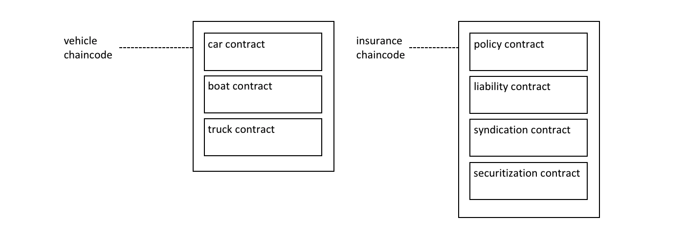

Smart Contracts and Chaincode¶
受众 ：架构师、应用程序和智能合约开发者、管理员。
注意:本教程描述的网络使用以前的生命周期过程，其中链码在通道上实例化。这个主题将被更新，以反映Fabric链码生命周期特性，该特性在v2.0.0的alpha版本中首次引入。
从应用程序开发人员的角度来看，智能合约与账本一起构成了超级账本Fabric区块链系统的核心。账本包含关于一组业务对象的当前和历史状态的事实，而智能合约定义了生成添加到账本中的新事实的可执行逻辑。链码通常被管理员用于对相关的智能合约进行分组，以便部署，但也可以用于Fabric的低级系统编程。在本主题中，我们将重点讨论为什么智能合约和链码都存在，以及如何和何时使用它们。
在本主题中，我们将讨论:
Smart contract¶
在业务之间进行交互之前，它们必须定义一组公共合约，其中包括公共术语、数据、规则、概念定义和流程。将这些合约放在一起，就构成了管理交易各方之间所有交互的业务模型。
 smart.diagram1 A smart contract defines the
rules between different organizations in executable code. Applications invoke a
smart contract to generate transactions that are recorded on the ledger.
smart.diagram1 A smart contract defines the
rules between different organizations in executable code. Applications invoke a
smart contract to generate transactions that are recorded on the ledger.
通过使用区块链网络，我们可以将这些合约转换为可执行程序(业内称为智能合约)，从而打开各种各样的新可能性。这是因为智能合约可以为任何类型的业务对象实现治理规则，以便在执行智能合约时自动执行这些规则。例如，一个智能合约可能会确保新车在指定的时间内交付，或者根据预先安排的条款释放资金，分别改善货物或资本的流动。然而，最重要的是，智能合约的执行要比人工业务流程高效得多。
在上面的图中，我们可以看到两个组织，ORG1和ORG2，如何定义了一个汽车智能合约来查询、传输和更新汽车。来自这些组织的应用程序调用此智能合约来执行业务流程中商定的步骤，例如将特定汽车的所有权从ORG1转移到ORG2。
Terminology¶
超级账本Fabric用户经常交替使用术语智能合约和链码。通常，智能合约定义交易逻辑，控制包含在世界状态中的业务对象的生命周期。然后将其打包成链码，然后部署到区块链网络。可以将智能合约看作管理交易，而链码则控制如何打包用于部署的智能合约。
smart.diagram2 A smart contract is defined within a chaincode. Multiple smart contracts can be defined within the same chaincode. When a chaincode is deployed, all smart contracts within it are made available to applications.
在图中，我们可以看到包含三个智能合约的车辆链码:轿车、船只和卡车。我们还可以看到包含四个智能合约的保险链码:保单、责任、联合和证券化。在这两种情况下，这些合约涵盖了与车辆和保险相关的业务流程的关键方面。在本主题中，我们将以汽合约为例。我们可以看到，智能合约是一个特定于领域的程序，它与特定的业务流程相关，而链码是一组用于安装和实例化的相关智能合约的技术容器。
Ledger¶
在最简单的层次上，区块链不可更改地记录交易，交易在账本中更新状态。智能合约以编程方式访问两个不同的账本区块链,永恒地记录所有交易的历史,和世界状态保存缓存这些状态的当前值,因为它是一个对象的当前值,通常是必需的。
智能合约主要将put、get和delete状态置于世界状态，还可以查询不可变的区块链交易记录。
A get typically represents a query to retrieve information about the current state of a business object.
A put typically creates a new business object or modifies an existing one in the ledger world state.
A delete typically represents the removal of a business object from the current state of the ledger, but not its history.
智能合约有许多可用的API。关键的是，在所有情况下，无论交易创建、读取、更新还是删除处于世界状态的业务对象，区块链都包含了这些更改的不可变记录。
Development¶
智能合约是应用程序开发的重点，正如我们所看到的，可以在一个链码中定义一个或多个智能合约。将链码部署到网络中，可以使其中包含的所有智能合约对该网络中的组织可用。这意味着只有管理员才需要担心链码;每个人都可以用智能合约来思考。
智能合约的核心是一组交易定义。例如，看看fabcar.js，你可以看到一个创建一辆新车的智能合约交易:
async createCar(ctx, carNumber, make, model, color, owner) {
const car = {
color,
docType: 'car',
make,
model,
owner,
};
await ctx.stub.putState(carNumber, Buffer.from(JSON.stringify(car)));
}
在编写您的第一个应用程序教程中，您可以了解更多关于Fabcar 智能合约的信息。
智能合约可以描述与多组织决策中数据不可篡改相关的几乎无限的业务用例。智能合约开发人员的工作是获取一个可能控制财务价格或交付条件的现有业务流程，并用JavaScript、GOLANG或Java等编程语言将其表示为一个智能合约。将数百年的法律语言转换为编程语言所需要的法律和技术技能，越来越多的智能合约审核员正在实践。您可以在“开发应用程序”主题中了解如何设计和开发智能合约。
Endorsement¶
与每个链码相关联的是一个背书策略，它适用于其中定义的所有智能合约。背书策略非常重要;它指示区块链网络中的哪些组织必须签署由给定智能合约生成的交易，以便该交易被声明为有效。
 smart.diagram3 Every smart contract has an
endorsement policy associated with it. This endorsement policy identifies which
organizations must approve transactions generated by the smart contract before
those transactions can be identified as valid.
smart.diagram3 Every smart contract has an
endorsement policy associated with it. This endorsement policy identifies which
organizations must approve transactions generated by the smart contract before
those transactions can be identified as valid.
一个示例背书策略可能定义参与区块链网络的四个组织中的三个必须在交易被认为有效之前签署该交易。所有的交易，无论是有效的还是无效的，都被添加到分布式账本中，但是只有有效的交易更新世界状态。
如果背书策略指定必须有多个组织签署交易，则必须由足够多的组织执行智能合约，以便生成有效的交易。在上面的示例中，要使汽车有效，需要由ORG1和ORG2执行并签署一个用于转移汽车的智能合约交易。
背书策略使得超级账本Fabric不同于其他区块链，比如以太坊(Ethereum)或比特币(Bitcoin)。在这些系统中，网络中的任何节点都可以生成有效的交易。超级账本Fabric更真实地模拟现实世界;交易必须由网络中的可信组织验证。例如，政府机构必须签署有效的证件交易，或者购车者和销售者都必须签署汽车转让交易。背书策略旨在允许超级账本Fabric更好地为这些类型的真实交互建模。
最后，背书策略只是超级账本Fabric中策略的一个例子。还可以定义其他策略来确定谁可以查询或更新账本，或者从网络中添加或删除参与者。一般来说，策略应该由区块链网络中的组织联盟事先商定，尽管它们不是一成不变的。实际上，策略本身可以定义可以更改它们的规则。虽然这是一个高级主题，但是也可以在Fabric提供的规则之上定义定制的背书策略规则。
Valid transactions¶
当智能合约执行时，它运行在区块链网络中组织所拥有的peer节点上。合约接受一组称为交易提案的输入参数，并将其与程序逻辑结合使用来读写账本。对世界状态的更改被捕获为交易提案响应(或者仅仅是交易响应)，该响应包含一个读写集，其中包含已读取的状态，以及如果交易有效，将写入新的状态。注意，在执行智能合约时，世界状态没有更新!
 smart.diagram4 All transactions have an
identifier, a proposal, and a response signed by a set of organizations. All
transactions are recorded on the blockchain, whether valid or invalid, but only
valid transactions contribute to the world state.
smart.diagram4 All transactions have an
identifier, a proposal, and a response signed by a set of organizations. All
transactions are recorded on the blockchain, whether valid or invalid, but only
valid transactions contribute to the world state.
检查汽车转移交易。您可以看到一个交易t3，用于ORG1和ORG2之间的汽车转移。查看交易如何具有输入{CAR1, ORG1, ORG2}和输出{CAR1.owner=ORG1, CAR1.owner=ORG2}，表示所有者从ORG1更改为ORG2。注意，输入是如何由应用程序的组织ORG1签名的，输出是如何由背书策略ORG1和ORG2标识的两个组织签名的。这些签名是使用每个参与者的私钥生成的，这意味着网络中的任何人都可以验证网络中的所有参与者在交易细节上达成一致。
分发到网络中所有peer节点的交易分两个阶段进行验证。首先，根据背书策略检查交易，确保有足够的组织签署。其次，对其进行检查，以确保当交易由背书的peer节点签名时，世界状态的当前值与交易的读集匹配;没有中间更新。如果一个交易通过了这两个测试，它就被标记为有效。所有交易都被添加到区块链历史记录中，不管是有效的还是无效的，但是只有有效的交易才会导致对世界状态的更新。
在我们的示例中，t3是一个有效的交易，因此CAR1的所有者已更新为ORG2。但是t4(未显示)是无效的交易，所以当它在账本记录时，世界状态没有更新，CAR2仍然属于ORG2所有。
最后，要了解如何使用具有世界状态的智能合约或链码，请阅读链码命名空间主题。
Channels¶
超级账本Fabric允许组织通过通道同时参与多个单独的区块链网络。通过加入多个通道，一个组织可以参与一个所谓的网络的网络。通道提供高效的基础设施共享，同时维护数据和通信隐私。它们足够独立，可以帮助组织将它们的工作流量与不同的对手方分开，但又足够集成，以便在必要时协调独立的活动。
 smart.diagram5 A channel provides a
completely separate communication mechanism between a set of organizations. When
a chaincode is instantiated on a channel, an endorsement policy is defined for
it; all the smart contracts within the chaincode are made available to the
applications on that channel.
smart.diagram5 A channel provides a
completely separate communication mechanism between a set of organizations. When
a chaincode is instantiated on a channel, an endorsement policy is defined for
it; all the smart contracts within the chaincode are made available to the
applications on that channel.
当链码在通道上实例化时，管理员为链码定义一个背书策略，并且可以在链码升级时更改它。背书策略同样适用于部署到通道的同一链码中定义的所有智能合约。这也意味着一个智能合约可以被部署到不同的通道，使用不同的背书策略。
在上面的示例中，将汽车合约部署到车辆通道，并将保险合约部署到保险通道。汽车合约有一个背书策略，要求ORG1和ORG2在被认为有效之前签署交易，而保险合约有一个背书策略，只要求ORG3签署有效交易。ORG1参与车辆通道和保险网络两个网络，分别与ORG2和ORG3协调这两个网络之间的活动。
Intercommunication¶
智能合约能够调用同一通道内和跨不同通道的其他智能合约。通过这种方式，他们可以读写世界状态数据，否则由于智能合约名称空间，他们将无法访问这些数据。
这种内部合约通信有一些限制，这些限制将在链码名称空间主题中详细描述。
System chaincode¶
链码中定义的智能合约为一组区块链组织之间达成一致的业务流程，编码领域相关规则。然而，链码还可以定义低层程序代码，这些代码对应独立于领域的系统交互，与这些业务流程的智能合约无关。
以下是不同类型的系统链码及其相关缩写:
Lifecycle system chaincode (LSCC) runs in all peers to handle package signing, install, instantiate, and upgrade chaincode requests. You can read more about the LSCC implements this process.
Configuration system chaincode (CSCC) runs in all peers to handle changes to a channel configuration, such as a policy update. You can read more about this process in the following chaincode topic.
Query system chaincode (QSCC) runs in all peers to provide ledger APIs which include block query, transaction query etc. You can read more about these ledger APIs in the transaction context topic.
Endorsement system chaincode (ESCC) runs in endorsing peers to cryptographically sign a transaction response. You can read more about how the ESCC implements this process.
Validation system chaincode (VSCC) validates a transaction, including checking endorsement policy and read-write set versioning. You can read more about the LSCC implements this process.
底层的Fabric开发人员和管理员可以根据自己的需要修改这些系统链码。然而，系统链码的开发和管理是一项专门的活动，与智能合约的开发完全分离，通常没有必要。对系统链码的更改必须非常小心地处理，因为它们是超级账本Fabric网络正确运行的基础。例如，如果没有正确地开发系统链代码，一个peer节点可能会以不同的方式更新其世界状态或区块链副本。这种缺乏共识是账本分叉的一种形式，是一种非常不可取的情况。